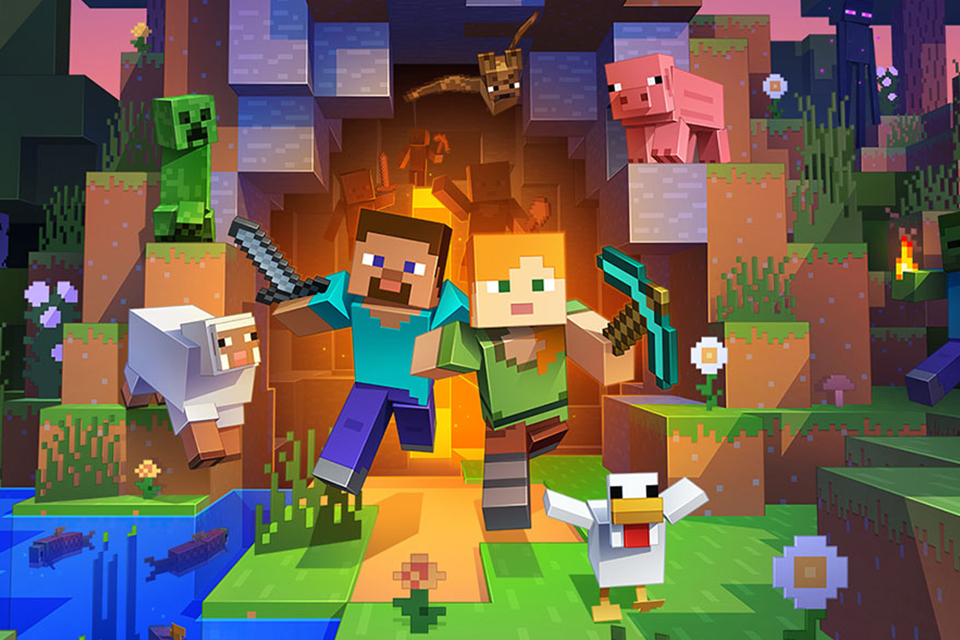

minecraft
Minecraft é um jogo eletrônico sandbox de sobrevivência criado pelo desenvolvedor sueco Markus "Notch" Persson e posteriormente desenvolvido e publicado pela Mojang Studios,
cuja propriedade intelectual
foi obtida pela Microsoft em 2014. Lançado inicialmente em maio de 2009 como um projeto em desenvolvimento, seu lançamento completo ocorreu em novembro
de 2011 para Microsoft Windows, macOS, Linux e alguns dispositivos móveis, sendo posteriormente relançado para uma ampla variedade de plataformas.
Em Minecraft, os jogadores exploram um mundo aberto tridimensional intencionalmente em blocos, pixelizado e gerado proceduralmente, podendo descobrir e extrair matérias-primas, ferramentas artesanais, construir estruturas ou terraplenagens e, dependendo do modo de jogo, podem combater inimigos controlados por computador, bem como cooperar ou competir contra outros jogadores no mesmo mundo. Esses modos incluem um modo sobrevivência, no qual o jogador precisa adquirir recursos para construir o mundo e se manter vivo, e um modo criativo, onde os jogadores têm recursos ilimitados. Em Java Edition, os jogadores podem modificar a jogabilidade com mods para criar novas mecânicas de itens, texturas, entre outros.